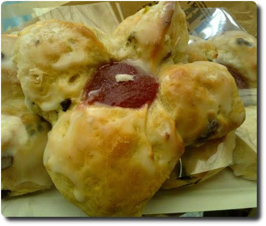

Hallo Nikola
Hallo Welt, hallo Nikola!
Hallo Welt, hallo Nikola!
Letzte Woche waren wir auf Urlaubsreise in Sachsen unterwegs - meinem Heimatbundesland (Mehr Bilder gibt es davon später). Im Raum Leipzig gibt es zur Zeit wieder Reformationsbrötchen beim Bäcker zu kaufen - im Gedenken an die Reformation der Kirche durch Martin Luther.
Dieses Brötchen ist ein Hefegebäck mit saftigem Teig, der meist Rosinen, Zitronat und Orangeat enthält. In der Mitte muss immer ein Klecks rote Marmelade sein. Sonst ist es kein echtes Reformationsbrötchen. Dieser Klecks soll ja die Lutherrose darstellen (siehe Wikipedia).
Wir hatten unsere Brötchen bei Lukas Bäcker auf dem Leipziger Hauptbahnhof gekauft. Die waren wirklich superlecker, ich hätte gern noch mehr davon gehabt!
Gestern haben wir eine Wanderung durch den Odenwald unternommen. Es ging von Hetzbach über Feldwege an Kuhweiden vorbei in den vernebelten Wald hinein. Dort gabs eine Menge Pilze zu sehen.
Die Luft war herrlich frisch und sauber. Nach zwei Stunden sind wir in Beerfelden angekommen und haben uns den Zwölf-Röhren-Brunnen und die Stadtkirche angeschaut. Schließlich ging es in einem großen Bogen wieder zurück nach Hetzbach.
Unterwegs haben wir den ältesten und besterhaltenen Galgen in Deutschland gesehen: https://de.wikipedia.org/wiki/Beerfelder_Galgen. Die letzte Hinrichtung fand dort 1804 statt.

Endlich mal wieder zusammen einen Kuchen gebacken:

Mmhhhh, was kann es besseres geben, als sich am Wochenende mit einem superleckeren Zwetschgenkuchen zu verwöhnen? Hach ja.... :-)

... soll aber Kaffee sein!
Heute haben wir seit langem wieder den Altstadtmarkt in Langen besucht und zum ersten Mal die Pilzpfanne mit Semmelknödel des hiesigen Pilzverkäufers probiert. Fazit: Sehr lecker. Aber auch die Rostbratwurst war wieder super. Außerdem haben wir noch super-knackige Gurken vom lokalen Bauern gekauft, die den Tag nicht lange überstanden. Miam!
Der kurze Regenschauer (siehe Foto) tat der guten Stimmung unter den Marktbesuchern (denen der Wein auch heute wieder zu schmecken schien) keinen Abbruch. Viele zückten die Regenschirme und -capes: So konnte das "Gebabbel" weitergeh'n...

Gestern in der Sneak Preview gesehen:
Hectors Reise oder die Suche nach dem Glück
Ein sehr schöner Film zum Lachen, Nachdenken und mit dem Partner Händchen halten! :-) Seit langer Zeit mal wieder tolles "Gefühlskino".
Bald ist es wieder soweit: Drachen steigen lassen :)
Eigentlich steh' ich mehr auf Tomaten, aber meine Liebste hat noch andere Favoriten... :-)
Witzig ist, dass wir dieses Jahr eigentlich keine Tomaten anbauen wollten, um in der Urlaubszeit nicht gießen zu müssen. Aber es kam alles anders... Denn die haben sich aus Früchten des letzten Jahres selbst ausgesäht. :-)
Aber seht selbst: Link

Gegen umweltverschmutzende Plastikverpackungen, verteilt von der Deutschen Post, haben schon fast 58.000 Menschen unterschrieben.
Am 30.07. kommt es nun zu einer öffentlichen Übergabe aller bisherigen Unterschriften von Fabian Lehner an die Deutsche Post - er wird davon berichten.
Ich bin gespannt wie es dann weiter geht. Wer noch nicht unterschrieben hat, möge das doch gerne tun und diese Aktion weiter teilen!
Und wer einfach gar keine Werbung mehr im Briefkasten haben möchte kann sich diesen Aufkleber ausdrucken und auf dem Kasten aufkleben. Fertig.